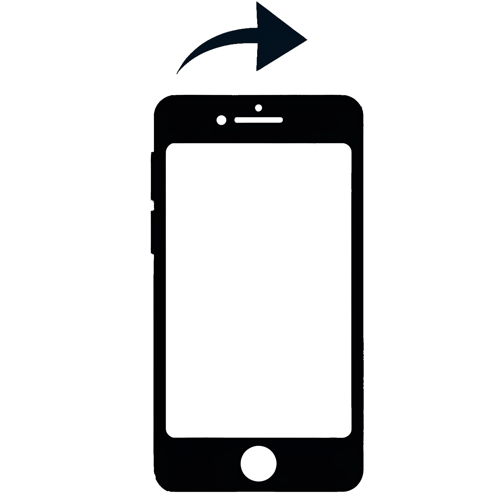
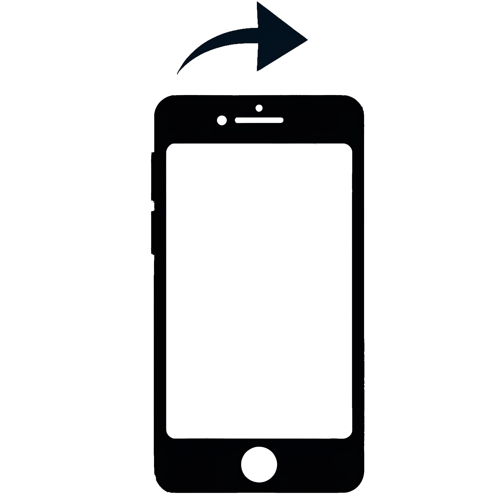

Photography is the poetry
of light, weaving together
moments that dance
between reality and
imagination, inviting us to
see the world through
new eyes.
- Lars
Select a folder to view the photographs.
——————————
Wähle einen Ordner aus, um die Fotos anzusehen.
My name is Lars Weigmann, I am 31 years old and based in Halle (Saale), Germany.
I've always been fascinated by the idea of capturing moments in time - preserving memories, emotions, and atmospheres before they fade.
This passion is what drives my interest in photography and videography.
With this website, I want to share the different moods and moments I encounter, primarily in my hometown Halle and its surroundings, but also beyond.
To make these moments even more immersive, I include short sound recordings from the locations where I take my pictures. This combination of visuals and ambient sounds allows for a deeper connection to the captured scenes.
New sets will be added regularly, so feel free to follow me on this exciting journey of visual storytelling!
——————————
Mein Name ist Lars Weigmann, ich bin 31 Jahre alt und wohne in Halle (Saale), Deutschland.
Ich war schon immer von der Idee fasziniert, Momente festzuhalten - Erinnerungen, Emotionen und Atmosphären zu bewahren, bevor sie verblassen.
Diese Leidenschaft ist es, die mein Interesse an der Fotografie und Videografie antreibt.
Mit dieser Website möchte ich die verschiedenen Stimmungen und Momente teilen, die mir vor allem in meiner Heimatstadt Halle und ihrer Umgebung, aber auch darüber hinaus begegnen.
Um diese Momente noch eindringlicher zu machen, füge ich kurze Tonaufnahmen von den Orten hinzu, an denen ich meine Bilder mache. Diese Kombination aus Bildern und Umgebungsgeräuschen ermöglicht eine tiefere Verbindung zu den aufgenommenen Szenen.
Es werden regelmäßig neue Sets hinzugefügt, also folge mir auf dieser spannenden Reise des visuellen Geschichtenerzählens!